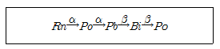
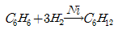
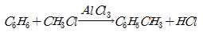
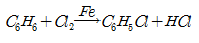
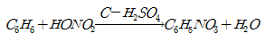
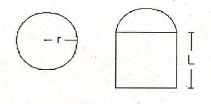
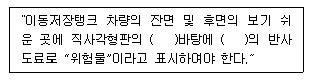
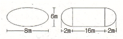

위험물산업기사 (2011-06-12 기출문제)
1과목: 일반화학
1. Mg2+ 와 같은 전자 배치를 가지는 것은?
- Ca2+
- Ar
- Cl-
- F-
(정답률: 68%)

2. 다음 물질 중 비전해질인 것은?
- CH3COOH
- C2H5OH
- NH4OH
- HCl
(정답률: 39%)
3. 염기성 산화물에 해당하는 것은?
- MgO
- SnO
- ZnO
- PbO
(정답률: 83%)
4. 다음 합금 중 주요성분으로 구리가 포함되지 않은 것은?
- 두랄루민
- 문쯔메탈
- 톰백
- 고속도강
(정답률: 65%)
5. 염소산칼륨을 이산화망간을 촉매로 하여 가열하면 염화칼륨과 산소로 열분해 된다. 표준상태를 기준으로 11.2L 의 산소를 얻으려면 몇 g 의 염소산칼륨이 필요한가? (단, 원자량은 K39, Cl 35.5 이다.)
- 30.63g
- 40.83g
- 61.25g
- 122.5g
(정답률: 48%)
6. 고체 유기물질을 정제하는 과정에서 이 물질이 순물질 인지를 알아보기 위한 조사 방법으로 다음 중 가장 적합한 방법은 무엇인가?
- 육안 관찰
- 녹는점 측정
- 광학현미경 분석
- 전도도 측정
(정답률: 75%)
7. Rn 은 a선 및 β선을 2번씩 방출하고 다음과 같이 변했다. 마지막 Po 의 원자번호는 얼마인가? (단, Rn 의 원자번호는 86, 원자량은 222 이다.)

- 78
- 81
- 84
- 87
(정답률: 84%)
8. 0.1N 아세트산 용액의 전리도가 0.01 이라고 하면 이 아세트산 용액의 pH 는?
- 0.5
- 1
- 1.5
- 3
(정답률: 62%)
9. 20℃ 에서 설탕물 100g 중에 설탕 40g 이 녹아 있다 이 용액이 포화용액일 경우 용해도(g/H2O 100g)는 얼마인가?
- 72.4
- 66.7
- 40
- 28.6
(정답률: 66%)
10. 그레이엄의 법칙에 따른 기체의 확산 속도와 분자량의 관계를 옳게 설명한 것은?
- 기체 확산 속도는 분자량의 제곱에 비례한다.
- 기체 확산 속도는 분자량의 제곱에 반비례한다.
- 기체 확산 속도는 분자량의 제곱근에 비례한다.
- 기체 확산 속도는 분자량의 제곱근에 반비례한다.
(정답률: 71%)
11. 2차 알코올이 산화되면 무엇이 되는가?
- 알데히드
- 에테르
- 카르복실산
- 케톤
(정답률: 54%)
12. 가로 2cm, 세로 5cm, 높이 3cm 인 직육면체 물체의 무게는 100g 이었다. 이 물체의 밀도는 몇 g/cm3 인가?
- 3.3
- 4.3
- 5.3
- 6.3
(정답률: 79%)
13. 이상기체의 거동을 가정할 때, 표준상태에서의 기체 밀도가 약 1.96g/L 인 기체는?
- O2
- CH4
- CO2
- N2
(정답률: 73%)
14. 어떤 원자핵에서 양성자의 수가 3 이고, 중성자의 수가 2일 때 질량수는 얼마인가?
- 1
- 3
- 5
- 7
(정답률: 92%)
15. 프리델 - 크래프트 반응을 나타내는 것은?




(정답률: 72%)
16. 황산구리(Ⅱ) 수용액을 전기분해할 때 63.5g 의 구리를 석출시키는데 필요한 전기량은 몇 F 인가? (단, Cu 의 원자량은 63.5 이다.)
- 0.635F
- 1F
- 2F
- 63.5F
(정답률: 74%)
17. P 43.7wt% 와 0 56.3wt% 로 구성된 화합물의 실험식으로 옳은 것은? (단, 원자량은 P 31, 0 16 이다.)
- P2O4
- PO3
- P2O5
- PO2
(정답률: 77%)
18. sp3 혼성궤도함수를 구성하는 것은?
- BF3
- CH4
- PCl5
- BeCl2
(정답률: 73%)
19. 산소 분자 1개의 질량을 구하기 위하여 필요한 것은?
- 아보가드로수와 원자가
- 아보가드로수와 분자량
- 원자량과 원자번호
- 질량수와 원자가
(정답률: 71%)
20. 올레핀계 탄화수소에 해당하는 것은?
- CH4
- CH2 = CH2
- CH ≡ CH
- CH3CHO
(정답률: 70%)
2과목: 화재예방과 소화방법
21. 위험물에 화재가 발생하였을 경우 물과의 반응으로 인해 주수소화가 적당하지 않은 것은?
- CH3ONO2
- KClO3
- Li2O2
- P
(정답률: 73%)
22. 제조소등에 전기설비(전기배선, 조명기구 등은 제외한다)가 설치된 장소의 바닥면적이 150m2 인 경우 설치해야 하는 소형수동식소화기의 최소 갯수는?
- 1개
- 2개
- 3개
- 4개
(정답률: 59%)
23. 경유 50000L 의 소화설비 소요단위는?
- 3
- 4
- 5
- 6
(정답률: 89%)
24. 벤젠과 톨루엔의 공통점이 아닌 것은?
- 물에 녹지 않는다.
- 냄새가 없다.
- 휘발성 액체이다.
- 증기는 공기보다 무겁다.
(정답률: 76%)
25. 황린이 연소할 때 다량으로 발생하는 흰연기는 무엇인가?
- P2O5
- P3O7
- PH3
- P4S3
(정답률: 84%)
26. 분말소화약제로 사용되는 주성분에 해당하지 않는 것은?
- 탄산수소나트륨
- 황산수소칼슘
- 탄산수소칼륨
- 제1인산암모늄
(정답률: 79%)
27. 옥외소화전설비의 옥외소화전이 3개 설치되었을 경우 수원의 수량은 몇 m3 이상이 되어야 하는가?
- 7
- 20.4
- 40.5
- 100
(정답률: 87%)
28. 옥외탱크저장소의 압력탱크 수압시험의 조건으로 옳은 것은?
- 최대상용압력의 1.5배의 압력으로 5분간 수압시험을 한다.
- 최대상용압력의 1.5배의 압력으로 10분간 수압시험을 한다.
- 사용압력에서 15분간 수압시험을 한다.
- 사용압력에서 20분간 수압시험을 한다.
(정답률: 87%)
29. 주된 연소형태가 나머지 셋과 다른 하나는?
- 유황
- 코크스
- 금속분
- 숯
(정답률: 71%)
30. 제3종 분말소화약제를 화재면에 방출시 부착성이 좋은 막을 형성하여 연소에 필요한 산소의 유입을 차단하기 때문에 연소를 중단시킬 수 있다. 그러한 막을 구성하는 물질은?
- H3PO4
- PO4
- HPO3
- P2O5
(정답률: 76%)
31. 펌프와 발포기의 중간에 설치된 벤투리관의 벤투리작용과 펌프 가압구의 포 소화약제 저장탱크에 대한 압력에 의하여 포 소화약제를 흡입ㆍ혼합하는 방식은?
- 프레셔 프로포셔너
- 펌프 프로포셔너
- 프레셔 사이드 프로포셔너
- 라인 프로포셔너
(정답률: 72%)
32. 위험물안전관리법령상 전기설비에 적응성이 없는 소화설비는?
- 포소화설비
- 이산화탄소소화설비
- 할로겐화합물소화설비
- 물분무소화설비
(정답률: 58%)
33. 자연발화 방지법에 대한 설명 중 틀린 것은?
- 습도가 낮은 것을 피할 것
- 저장실의 온도가 낮을 것
- 퇴적 및 수납할 때 열이 축적되지 않을 것
- 통풍이 잘 될 것
(정답률: 85%)
34. 복합용도 건축물의 옥내저장소의 기준에서 옥내저장소의 용도에 사용되는 부분의 바닥면적은 몇 m2 이하로 하여야 하는가?
- 30
- 50
- 75
- 100
(정답률: 56%)
35. 물의 특성 및 소화효과에 관한 설명으로 틀린 것은?
- 이산화탄소보다 기화 잠열이 크다.
- 극성분자이다.
- 이산화탄소보가 비열이 작다.
- 주된 소화효과가 냉각소화이다.
(정답률: 78%)
36. 묽은 질산이 칼슘과 반응하면 발생하는 기체는?
- 산소
- 질소
- 수소
- 수산화칼슘
(정답률: 56%)
37. 전역방출방식 분말소화설비에 있어 분사헤드는 저장용기에 저장된 분말소화약제량을 몇 초 이내에 균일하게 방사하여야 하는가?
- 15
- 30
- 45
- 60
(정답률: 55%)
38. 위험물안전관리법령상 위험물 품명이 나머지 셋과 다른 것은?
- 메틸알코올
- 에틸알코올
- 이소프로필알코올
- 부틸알코올
(정답률: 59%)
39. 제1석유류를 저장하는 옥외탱크저장소에 특형 포방구출구응 설치하는 경우에 방출율은 약표면적 1m2 당 1분에 몇 리터 이상이어야 하는가?
- 9.5L
- 8.0L
- 6.5L
- 3.7L
(정답률: 55%)
40. 위험물저장소 건축물의 외벽이 내화구조인 것은 연면적 얼마를 1소요단위로 하는가?
- 50m2
- 75m2
- 100m2
- 150m2
(정답률: 81%)
3과목: 위험물의 성질과 취급
41. 과염소산나트륨에 대한 설명 중 틀린 것은?
- 물에 녹는다.
- 산화제이다.
- 열분해하여 염소를 방출한다.
- 조해성이 있다.
(정답률: 66%)
42. 비중이 1 보다 큰 물질은?
- 이황화탄소
- 에틸알코올
- 아세트알데히드
- 테레핀유
(정답률: 72%)
43. 위험물의 운반용기 외부에 수납하는 위험물의 종류에 따라 표시하는 주의사항을 옳게 연결한 것은?
- 염소산칼륨 - 물기주의
- 철분 - 물기주의
- 아세톤 - 화기엄금
- 질산 - 화기엄금
(정답률: 70%)
44. 메틸알코올 에틸알코올의 공통 성질이 아닌 것은?
- 무색투명한 휘발성 액체이다
- 물에 잘 녹는다.
- 비중은 물보다 작다.
- 인체에 대한 유독성이 없다.
(정답률: 71%)
45. 담황색의 고체 위험물에 해당하는 것은?
- 니트로셀룰로오스
- 금속칼륨
- 트리니트로톨루엔
- 아세톤
(정답률: 49%)
46. 다음 중 발화점이 가장 낮은 것은?
- 황
- 황린
- 적린
- 삼황화린
(정답률: 58%)
47. 초산에틸(아세트산에틸)의 성질에 대한 설명으로 틀린 것은?
- 물보다 가볍다.
- 끓는점이 약 77℃ 이다.
- 비수용성 제1석유류로 구분된다.
- 무색, 무취의 투명 액체이다.
(정답률: 50%)
48. [그림]과 같은 위험물을 저장하는 탱크의 내용적은 약 몇 m3 인가? (단, r 은 10m, L은 25m 이다.)

- 3612
- 4712
- 5812
- 7854
(정답률: 83%)
49. 가솔린에 대한 설명 중 틀린 것은?
- 수산화칼륨과 요오드포름 반응을 한다.
- 휘발하기 쉽고 인화성이 크다.
- 물보다 가벼우나 증기는 공기보다 무겁다.
- 전기에 대하여 부도체이다.
(정답률: 47%)
50. 다음 중 요오드가가 가장 큰 것은?
- 땅콩기름
- 해바라기기름
- 면실유
- 아마인유
(정답률: 88%)
51. 위험물 저장기준으로 틀린 것은?
- 이동탱크저장소에는 설치허가증을 비치하여야 한다.
- 지하저장탱크의 주된 밸브는 위험물을 넣거나 빼낼 때 외에는 폐쇄하여야 한다.
- 아세트알데히드를 저장하는 이동저장탱크에는 탱크안에 불활성 가스를 봉입하여야 한다.
- 옥외저장탱크 주위에 설치된 방유제의 내부에 물이나 유류가 괴었을 경우에는 즉시 배출하여야 한다.
(정답률: 79%)
52. 다음 중 인화점이 가장 높은 것은?
- CH3COOC2H5
- CH3OH
- CH3COOH
- CH3COCH3
(정답률: 49%)
53. 제4류 위험물을 저장하는 이동탱크저장소의 탱크 용량이 19000L 일 때 탱크의 칸막이는 최소 몇 개를 설치해야 하는가?
- 2
- 3
- 4
- 5
(정답률: 80%)
54. 피리딘에 대한 설명 중 틀린 것은?
- 액체이다.
- 물에 녹지 않는다.
- 상온에서 인화의 위험이 있다.
- 독성이 있다.
(정답률: 68%)
55. 물과 접촉시 동일한 가스를 발생하는 물질을 나열한 것은?
- 수소화알루미늄리튬, 금속리튬
- 탄화칼슘, 금속칼슘
- 트리에틸알루미늄, 탄화알루미늄
- 인화칼슘, 수소화칼슘
(정답률: 50%)
56. 다음 ( )안에 알맞은 색상을 차례대로 나열한 것은?

- 백색 - 적색
- 백색 - 흑색
- 황색 - 적색
- 흑색 - 황색
(정답률: 73%)
57. 과산화나트륨에 관한 설명 중 옳지 못한 것은?
- 가열하면 산소를 방출한다.
- 표백제, 산화제로 사용한다.
- 아세트산과 반응하여 과산화수소가 발생된다.
- 순수한 것은 엷은 녹색이지만 시판품은 진한 청색이다.
(정답률: 64%)
58. 그림과 같은 타원형 탱크의 내용적은 약 몇 m3 인가?

- 453
- 553
- 653
- 753
(정답률: 75%)
59. 니트로글리세린에 대한 설명으로 틀린 것은?
- 순수한 것은 상온에서 무색 투명한 액체이다.
- 순수한 것은 겨울철에 동결될 수 있다.
- 메탄올에 녹는다.
- 물보다 가볍다.
(정답률: 48%)
60. A 업체에서 제조한 위험물을 B 업체로 운반할 때 규정에 의한 운반용기에 수납하지 않아도 되는 위험물은? (단, 지정수량의 2배 이상인 경우이다.)
- 덩어리 상태의 유황
- 금속분
- 삼산화크롬
- 염소산나트륨
(정답률: 86%)